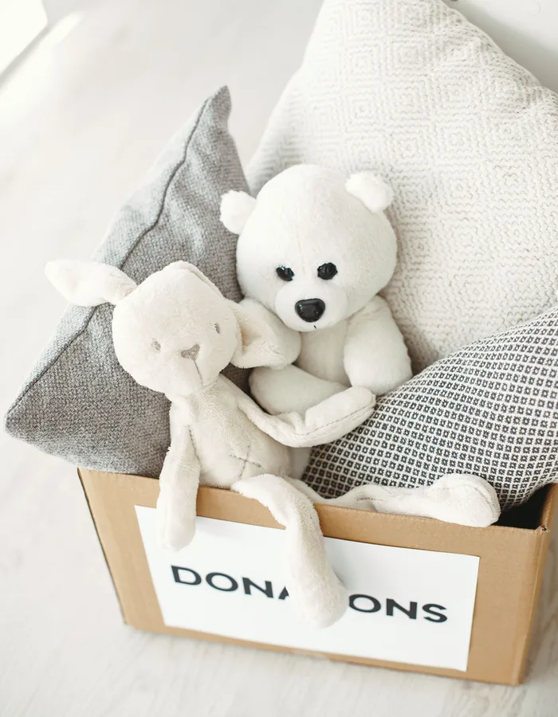

Ideas para comprar con más criterio, reutilizar lo que ya tenemos y transmitir a los niños un consumo más consciente.
Vivimos rodeados de cosas. Ropa, libros, juegos, objetos para el colegio, materiales para crear, dispositivos, regalos y todo tipo de productos forman parte de nuestra vida cotidiana.
Para los niños, además, el mundo está lleno de novedades. Algo que ven puede despertar inmediatamente su interés y hacer que parezca que necesitan tenerlo.
Enseñarles a relacionarse de una manera más consciente con las cosas no significa decir que no a todo ni evitar que tengan juguetes, libros o regalos.
Se trata de ayudarles a comprender algo más sencillo y más importante:
las cosas tienen un valor, ocupan un espacio, requieren recursos para producirse y merece la pena cuidarlas y aprovecharlas.
El consumo responsable empieza con pequeñas decisiones cotidianas y puede formar parte de la vida familiar sin convertirse en una asignatura.
A veces hablamos de consumo responsable como si significara simplemente comprar menos.
Pero no es tan sencillo.
Una familia puede consumir de forma responsable y seguir comprando cosas que necesita, disfrutando de regalos, renovando productos o adquiriendo algo simplemente porque le hace ilusión.
La cuestión está en tomar las decisiones con algo más de conciencia.
Antes de comprar algo puede ser útil preguntarse:
No hace falta hacerse estas preguntas delante de cada pequeña compra.
Simplemente incorporar poco a poco esta forma de pensar puede cambiar nuestra relación con el consumo.
Si quieres más criterios para el momento concreto de comprar, puedes leer nuestro artículo sobre cómo comprar mejor para los niños.
Para los niños, especialmente cuando son pequeños, puede ser difícil distinguir entre algo que quieren y algo que necesitan.
Y tampoco es necesario que dejen de querer cosas.
Querer algo forma parte de la experiencia de crecer.
Lo interesante es ayudarles a reconocer la diferencia.
Podemos decir:
"No lo necesitas, pero te gusta y te gustaría tenerlo."
Esta pequeña distinción permite hablar de los deseos sin convertirlos automáticamente en necesidades.
Con el tiempo, el niño puede empezar a comprender que no todo lo que queremos tenemos que comprarlo inmediatamente.
También es importante evitar el extremo contrario.
No todo lo que entra en casa tiene que ser útil, educativo o productivo.
Un libro puede enseñar.
Un juego puede desarrollar determinadas habilidades.
Pero también podemos comprar algo simplemente porque nos gusta.
El ocio y el disfrute también tienen valor.
El consumo responsable no consiste en justificar cada compra diciendo que tiene una finalidad educativa.
Consiste en ser conscientes de lo que compramos y por qué lo compramos.
Los niños están constantemente expuestos a cosas nuevas.
Las ven en tiendas, anuncios, vídeos, escaparates, casas de amigos o conversaciones con otros niños.
Es normal que aparezcan deseos.
Una estrategia sencilla puede ser crear una pequeña lista de cosas que les gustaría tener.
En lugar de comprar inmediatamente algo que llama su atención, podemos apuntarlo y volver a valorar la idea más adelante.
Después de unos días puede ocurrir que:
Esperar un poco no significa negar el deseo.
Significa darle tiempo para comprobar si realmente sigue existiendo.
El dinero también forma parte de la educación para el consumo.
No hace falta convertir cada compra en una explicación económica complicada.
Pero los niños pueden empezar a entender que las cosas cuestan dinero y que una familia tiene que tomar decisiones sobre cómo utilizarlo.
Podemos hablar de cosas sencillas:
"Esto cuesta más que aquello."
"Tenemos un presupuesto determinado."
"Hoy vamos a elegir una de estas dos cosas."
De esta manera empiezan a comprender que los recursos son limitados y las decisiones implican elegir.
Cuando el niño quiere varias cosas, una posibilidad es ofrecerle alternativas.
Por ejemplo:
"Puedes elegir una de estas dos."
O:
"Hoy no vamos a comprar esto, pero podemos apuntarlo para otra ocasión."
Esto permite que participe en la decisión sin que el adulto tenga que aceptar todos sus deseos.
También ayuda a introducir una idea importante:
elegir una cosa significa renunciar a otra.
El consumo responsable no termina cuando compramos algo.
Quizá uno de los aprendizajes más importantes sea aprender a cuidar aquello que ya forma parte de nuestra vida.
Guardar los libros correctamente.
Recoger los materiales después de utilizarlos.
Tratar con cuidado los juegos.
Guardar la ropa.
Limpiar determinados objetos.
Evitar romper algo por utilizarlo de manera inadecuada.
Son pequeñas acciones, pero ayudan a comprender que las cosas no son desechables simplemente porque ya no estén nuevas.
Cuando algo se rompe, la primera reacción puede ser pensar en comprar otro.
Pero algunas cosas pueden repararse.
Un libro puede arreglarse.
Una caja puede volver a utilizarse.
Una prenda puede coserse.
Un objeto puede tener una segunda oportunidad.
No siempre será posible ni tendrá sentido reparar algo.
Pero cuando sí lo es, involucrar al niño en el proceso puede convertirse en una oportunidad para enseñarle que romper algo no significa necesariamente que haya que tirarlo.
Los objetos que ya no utilizamos pueden seguir teniendo utilidad.
Una prenda puede pasar a otro niño.
Un libro puede regalarse.
Un juego puede donarse.
Un material creativo puede aprovecharse para otro proyecto.
Incluso algunos objetos cotidianos pueden convertirse en materiales para jugar o crear.
Antes de tirar algo, podemos preguntarnos:
¿Puede utilizarlo otra persona?
¿Podemos darle otro uso?
¿Podemos repararlo?
¿Podemos reciclarlo correctamente?
No siempre habrá una respuesta afirmativa.
Pero acostumbrarnos a plantear estas preguntas cambia poco a poco nuestra manera de consumir.
Los niños pueden acumular muchas cosas que con el tiempo dejan de utilizar.
Cuando ocurre, puede ser un buen momento para revisar juntos lo que tienen.
Pero conviene evitar convertirlo en una decisión unilateral del adulto.
Siempre que sea apropiado, el niño puede participar.
Podemos preguntarle:
La idea no es obligarle a desprenderse de sus cosas.
Es ayudarle a entender que conservar algo también es una decisión.
No todo tiene que pertenecer individualmente a cada miembro de la familia.
Algunas cosas pueden compartirse:
En algunos casos también puede tener sentido intercambiar objetos con familiares o amigos.
Compartir permite acceder a cosas diferentes sin necesidad de que cada familia tenga que comprarlas todas.
Cumpleaños, Navidad y otras celebraciones pueden generar una gran cantidad de objetos en poco tiempo.
Esto no significa que haya que eliminar los regalos.
Pero sí puede ser interesante pensar en cómo queremos que sean.
En algunos casos puede funcionar:
El objetivo no es que los regalos sean siempre "útiles".
También pueden ser simplemente especiales.
Lo importante es evitar que la cantidad termine siendo más importante que el significado del regalo.
Si quieres más ideas para organizar celebraciones con sentido, puedes leer nuestro artículo sobre cumpleaños y celebraciones.
Decoraciones, envoltorios, vajillas de un solo uso, pequeños regalos para invitados y todo tipo de elementos pueden acumularse rápidamente después de una celebración.
No es necesario eliminar todo esto.
Pero podemos elegir algunas soluciones más duraderas o reutilizables.
Una decoración puede utilizarse en más de un cumpleaños.
Una caja puede guardarse para otra ocasión.
Un material puede reutilizarse.
Una celebración puede ser especial sin necesitar una cantidad enorme de objetos.
Los niños reciben constantemente mensajes que les dicen que algo nuevo puede hacerles más felices, más populares o más divertidos.
Dependiendo de la edad, puede ser interesante empezar a hablar sobre cómo funciona la publicidad.
Podemos preguntar:
¿Qué crees que quiere conseguir este anuncio?
¿Crees que el producto es realmente como aparece aquí?
¿Por qué crees que utilizan esos colores o personajes?
No hace falta dar una clase sobre publicidad.
Simplemente empezar a desarrollar una mirada crítica puede ayudar a que el niño comprenda que un anuncio intenta convencernos de comprar algo.
Los niños pueden desarrollar preferencias por determinadas marcas o personajes.
Esto forma parte del consumo y no tiene por qué ser negativo.
Pero también puede ser útil enseñarles que el valor de algo no depende únicamente de que tenga un determinado logo.
Podemos comparar:
De esta manera, el niño aprende progresivamente a valorar las cosas por diferentes motivos y no únicamente por su marca.
A medida que crecen, los niños pueden participar más en pequeñas decisiones de compra.
Podemos comparar dos opciones y hablar de:
No es necesario convertir cada compra en una actividad.
Pero algunas decisiones cotidianas pueden convertirse en pequeñas oportunidades para aprender.
Existe una diferencia entre querer algo nuevo y necesitar que sea nuevo.
Algunas cosas pueden adquirirse de segunda mano, heredarse o intercambiarse.
Esto puede tener sentido especialmente con objetos que se utilizan durante poco tiempo.
La opción dependerá de cada producto y de su estado.
Lo importante es que los niños comprendan que algo que ya ha sido utilizado puede seguir teniendo valor.
Cuando algo deja de servir, también importa qué hacemos con ello.
No todos los residuos deben tratarse de la misma manera.
Dependiendo del objeto, puede corresponder:
Los niños pueden participar en estas pequeñas decisiones cuando sea apropiado.
Así empiezan a entender que lo que tiramos no desaparece simplemente porque salga de nuestra vista.
Hablar de consumo responsable no significa que la familia tenga que hacerlo todo perfectamente.
Habrá compras impulsivas.
Habrá productos que se rompan.
Habrá cosas que terminen en la basura.
Habrá ocasiones en las que elegiremos la opción más cómoda.
No pasa nada.
El objetivo es desarrollar una forma de pensar más consciente, no conseguir una familia perfecta.
Los hábitos se construyen poco a poco.
Los niños aprenden mucho observando.
Si ven que los adultos:
están viendo el consumo responsable en la práctica.
No hace falta dar grandes discursos.
A veces una decisión cotidiana explica más que una larga conversación.
También es importante aceptar que los niños crecen y sus necesidades cambian.
Algo que fue muy útil durante un tiempo puede dejar de serlo.
El consumo responsable no significa conservar absolutamente todo.
Si algo ya no sirve, no se utiliza o ha dejado de ser adecuado, puede ser razonable buscarle otra salida.
La cuestión está en evitar acumular por acumular.
No hace falta revisar todas las pertenencias constantemente.
Pero algunos momentos del año pueden ser adecuados para comprobar qué tenemos.
Por ejemplo:
Una revisión permite detectar:
Esto también ayuda a que la casa no se llene progresivamente de objetos que ya no tienen utilidad.
Si quieres más ideas para organizar este tipo de revisiones, puedes leer nuestro artículo sobre organización y hogar.
Esta puede ser la idea central de todo el artículo.
No se trata de contar cuántos juguetes, libros o pertenencias tiene un niño.
Tampoco de hacer que se sienta mal por querer algo.
Se trata de ayudarle a comprender que:
Valorar más no significa necesariamente tener menos.
Significa ser más conscientes de lo que tenemos.
El consumo responsable puede empezar con pequeñas decisiones familiares.
Puede ayudar:
No se trata de enseñarles que comprar está mal.
Se trata de enseñarles que comprar es una decisión y que nuestras decisiones tienen consecuencias.
Porque cuando un niño aprende a cuidar lo que tiene, a valorar lo que recibe y a pensar antes de sustituir o comprar algo nuevo, está adquiriendo algo que puede acompañarle mucho más allá de la infancia:
una forma más consciente de relacionarse con las cosas.